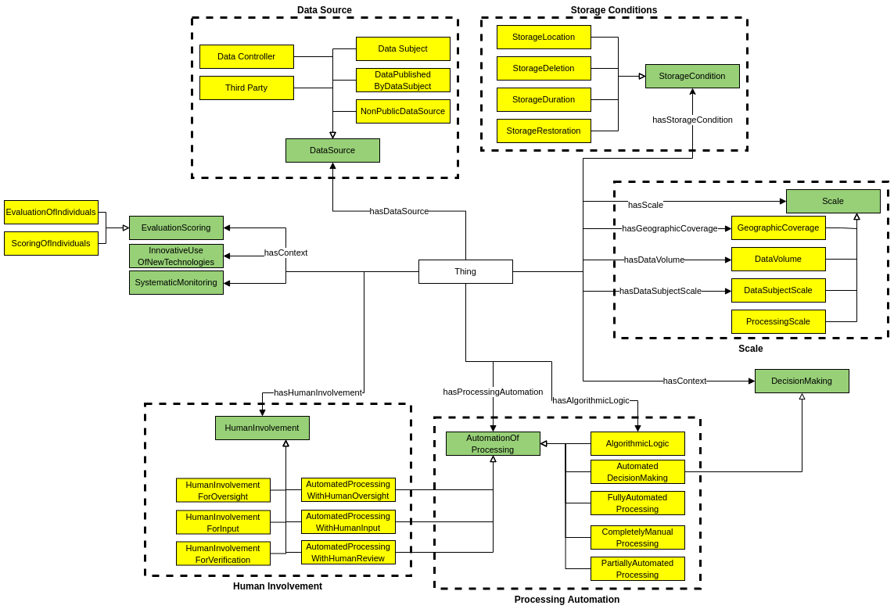

The Data Privacy Vocabulary [[DPV]] enables expressing machine-readable metadata about the use and processing of personal data based on legislative requirements such as the General Data Protection Regulation [[GDPR]]. This document describes the DPV-OWL specification that provides the DPV as an OWL2 ontology.
For a general overview of the Data Protection Vocabularies and Controls Community Group [[DPVCG]], its history, deliverables, and activities - refer to DPVCG Website.
The peer-reviewed article “Creating A Vocabulary for Data Privacy” presents a historical overview of the DPVCG, and describes the methodology and structure of the DPV along with describing its creation. An open-access version can be accessed here, here, and here.
Contributing to the DPV and its extensions The DPVCG welcomes participation regarding the DPV, including expansion or refinement of its terms, addressing open issues, and welcomes suggestions on their resolution or mitigation. For further information, please see the contribution section.
Introduction
This document assumes the reader is familiar with DPV through the [[[DPV-Primer]]] and has gone through the [[[DPV]]] (primary specification), and thus focuses on providing a topically structured documentation of concepts defined by DPV-OWL
Semantics
DPV-OWL's terms are defined using OWL2 semantic, where concepts are expressed using owl:Class, subtypes are expressing using rdfs:subClassOf, instances using owl:NamedIndividual, and relations using owl:ObjectProperty. The taxonomies are expressed as hierarchies through subclass mechanisms.
DPV consists of certain 'core concept' that are intended to be independent representations of specific information, and are distinct from other core concepts. For example, the [=Purpose=] (e.g. Optimisation) refers only to the purpose of why personal data is processed and is independent as a concept from the [=PersonalData=] (e.g. [=Location=]) or the [=Processing=] activities (e.g. [=collect=], [=store=]) involved to carry out that purpose.
The structuring of DPV is based on providing rich and comprehensive taxonomies that group concepts together based on each core concept, e.g. taxonomy of purposes, which is reflected in the serialisation and documentation (e.g. this document). Other extentions provide additional concepts that expand DPV's concept or complement them with separation and optionality through namespaces. For a list of all DPV related documents, see document family section.
Base Vocabulary
Base Vocabulary
DPV can be viewed as a hierarchical taxonomy of concepts where each core concept represents the top-most abstract concept in a tree and each of its children provide a lesser abstract or more concrete concept. For example, consider the concept of [=PersonalData=] which is the abstract representation of personal data. It can be further refined or extended as [=SensitivePersonalData=], and further as [=SpecialCategoryPersonalData=] and then as GeneticData and so on.
From this perspective, the top-most abstract concepts are collectively referred to as the core vocabulary within DPV. The goal of the DPV is to provide a rich collection of concepts for each of top concepts so as to enable their application within real-world use-cases. The identification of what constitutes a core concept is based on the need to represent information about it in a modular and independent form, such as that required for legal compliance.
The 'Base' or 'Core' concepts in DPV represent the most relevant concepts for representing information regarding the what, how, where, who, why of personal data and its processing. Each of these concepts is further elaborated as a taxonomy of concepts in a hierarchical fashion. The DPV provides the following as 'top-level' concepts and relations to associate them with other concepts:
Concept
Relevant Section
[=PersonalData=]
[=hasPersonalData=]
[=Purpose=]
[=hasPurpose=]
[=Processing=]
[=hasProcessing=]
[=DataController=]
[=hasDataController=]
[=DataSubject=]
[=hasDataSubject=]
[=Recipient=]
[=hasRecipient=]
[=TechnicalOrganisationalMeasure=]
[=hasTechnicalOrganisationalMeasure=]
[=LegalBasis=]
[=hasLegalBasis=]
[=Right=]
[=hasRight=]
[=Risk=]
[=hasRisk=]
[=PersonalDataHandling=]
[=hasPersonalDataHandling=]
DPV provides taxonomies for all core concepts except the ones specified below:
PersonalDataHandling: DPV defines the concept of for representing a 'policy' or 'grouping' that associates the top-level concepts with one another. The relation hasPersonalDataHandling provides a relation to associate a [=PersonalDataHandling=] with other concepts, including like itself.
[=Right=]: The concept [=Right=] represents a generic rights provided or recognised by some law or convention. The relation [=hasRight=] provides the relation to associate a [=Right=] with concepts.. In addition, [=DataSubjectRight=] refers to rights specifically available to applicable for Data Subjects.
Taxonomies
The rest of the document expands on the core concepts through the following taxonomies.
Risk & Impacts for risk assessment, management, and expressino of consequences and impacts associated with processing.
Rights and Rights Exercise for specifying what rights are applicable, how they can be exercised, and how to provide information associated with rights.
Rules for expressing constraints, requirements, and other forms of rules that can specify or assist in interpreting what is permitted, prohibited, mandatory, etc.
Further to these, there are separate extensions that provide additional concepts. These are:
[[[DPV-PD]]]
[[[DPV-GDPR]]]
[[[DPV-TECH]]]
[[[DPV-LEGAL]]]
[[[RISK]]]
[[[RIGHTS]]]
Entities
DPV relies on existing well-founded interpretations for its concepts, which in this case relate to Entity as a generic universal concept and LegalEntity specifically referring to roles defined legally or within legal norms. Expanding on these, DPV provides a taxonomy of entities based on their application within laws and use-cases in the form of Legal roles, such as [=DataController=], [=DataSubject=], and [=Authority=]. Later, these concepts are expanded into taxonomies for different kinds of entities categorised under a common concept. For example, categories of Data Subjects such as [=Adult=], [=User=], or [=Employee=]; or kinds of Authorities, or categories of Organisations.
Legal Role is the role taken on by a legal entity based on definitions or criterias from laws, regulations, or other such normative sources. Legal roles assist in representing the role and responsibility of an entity within the context of processing, and from this to determine the requirements and obligations that should apply, and their compliance or conformance.
The EU, in particular the EDPB, uses data exporter the context of cross-border data transfers/flows. These concepts are not bound by jurisdictional or geopolitical scopes within DPV and can thus be used for any notion of exporting
The EU, in particular the EDPB, uses data importing the context of cross-border data transfers/flows. These concepts are not bound by jurisdictional or geopolitical scopes within DPV and can thus be used for any notion of importing
An entity within or authorised by an organisation to monitor internal compliance, inform and advise on data protection obligations and act as a contact point for data subjects and the supervisory authority.
A recipient of personal data can be used to indicate any entity that receives personal data. This can be a Third Party, Processor (GDPR), or even a Controller.
A ‘third party’ means a natural or legal person, public authority, agency or body other than the data subject, controller, processor and people who, under the direct authority of the controller or processor, are authorised to process personal data.
The concept [=Authority=] is a specific Governmental Organisation authorised to enforce a law or regulation. Authorities can be associated with a specific domain, topic, or jurisdiction. DPV currently defines regional authorities for [=NationalAuthority=], [=RegionalAuthority=], and [=SupraNationalAuthority=], and [=DataProtectionAuthority=] represents authorities associated with data protection and privacy. To associate authorities with concepts, the relations [=hasAuthority=] and [=isAuthorityFor=] are provided.
An organisation and its subordinate bodies governed by public international law, or any other body which is set up by, or on the basis of, an agreement between two or more countries
DPV provides a taxonomy of data subject types to assist with describing what kind of individuals or groups are associated with an use-case. Some examples of such types are agency-based roles: [=Adult=] and [=Child=], [=ParentOfDataSubject=], [=GuardianOfDataSubject=]; those associated with vulnerability: [=VulnerableDataSubject=], [=ElderlyDataSubject=], [=AsylumSeeker=]; domain-specific roles such as [=Patient=], [=Employee=], [=Student=], jurisdictional roles such as [=Citizen=], [=NonCitizen=], [=Immigrant=]; and general roles such as [=User=], [=Member=], [=Participant=], and [=Client=].
The legality of age defining a child varies by jurisdiction. In addition, 'child' is distinct from a 'minor'. For example, the legal age for consumption of alcohol can be 21, which makes a person of age 20 a 'minor' in this context. In other cases, 'minor' and 'child' are used interchangeably to refer to a person below some legally defined age.
This concept denotes a Data Subject or a group are vulnerable, but not what vulnerability they possess or its context. This information can be provided additionally as comments, or as separate concepts and relations. Proposals for this are welcome.
Georg P Krog,
Harshvardhan J. Pandit,
Julian Flake,
Paul Ryan
Purposes
Overview of Purpose taxonomy in DPV (click to open in new window)
DPV’s taxonomy of purposes is used to represent the reason or justification for processing of personal data. For this, purposes are organised within DPV based on how they relate to the processing of personal data in terms of several factors, such as: management functions related to information (e.g. records, account, finance), fulfilment of objectives (e.g. delivery of goods), providing goods and services (e.g. service provision), intended benefits (e.g. optimisations for service provider or consumer), and legal compliance.
Purposes associated with conducting advertising i.e. process or artefact used to call attention to a product, service, etc. through announcements, notices, or other forms of communication
Customer Care Communication refers to purposes associated with communicating with customers for assisting them, resolving issues, ensuring satisfaction, etc. in relation to services provided
Communication Management refers to purposes associated with providing or managing communication activities e.g. to send an email for notifying some information
This purpose by itself does not sufficiently and clearly indicate what the communication is about. As such, it is recommended to combine it with another purpose to indicate the application. For example, Communication of Payment.
Created:
Contributor(s):
David Hickey,
Georg P Krog,
Harshvardhan J. Pandit,
Paul Ryan
Customer Care refers to purposes associated with purposes for providing assistance, resolving issues, ensuring satisfaction, etc. in relation to services provided
Customer Order Management refers to purposes associated with managing customer orders i.e. processing of an order related to customer's purchase of good or services
HR is a broad concept. Its management includes, amongst others - recruiting employees and intermediaries e.g. brokers, independent representatives; payroll administration, remunerations, commissions, and wages; and application of social legislation.
This purpose only refers to processing that is additionally required in order to fulfill the obligations and requirements associated with a law. For example, the use of consent would have its own separate purposes, with this purpose addressing a legal requirement for maintaining consent record (along with RecordManagement). This purpose will typically be used with Legal Obligation as the legal basis.
Created:
Modified:
Contributor(s):
Beatriz Esteves,
Georg P Krog,
Harshvardhan J. Pandit
The term optmisation here refers to the efficiency of the service in terms of technical provision (or similar means) with benefits for everybody. Personalisation implies making changes that benefit the current user or persona.
Created:
Contributor(s):
Axel Polleres,
Elmar Kiesling,
Fajar Ekaputra,
Harshvardhan J. Pandit,
Javier Fernandez,
Simon Steyskal
Note that this concept relates to internal organisational compliance. The concept LegalCompliance should be used for external legal or regulatory compliance.
Created:
Contributor(s):
David Hickey,
Georg P Krog,
Harshvardhan J. Pandit,
Paul Ryan
This term is a blanket purpose category for indicating personalisation of some other purpose, e.g. by creating a subclass of the other concept and Personalisation
Purposes associated with manage creation, storage, and use of records relevant to operations, events, and processes e.g. to store logs or access requests
This purpose relates specifiaclly for record creation and management. This can be combined or used along with other purposes to express intentions such as records for legal compliance or vendor payments.
Created:
Contributor(s):
David Hickey,
Georg P Krog,
Harshvardhan J. Pandit,
Paul Ryan
Purposes associated with identifying, rectifying, or otherwise undertaking activities intended to fix or repair impairments to existing functionalities
The use of 'request' here includes where an user explicitly asks for the service and also when an established contract requires the provision of the service
Created:
Contributor(s):
Beatriz Esteves,
Georg P Krog,
Harshvardhan J. Pandit
Sector describes the area of application or domain that indicates or restricts scope for interpretation and application of purpose e.g. Agriculture, Banking
Note:
There are various sector codes used commonly to indicate the domain of an organisation or business. Examples include NACE (EU), ISIC (UN), SIC and NAICS (USA).
Created:
Contributor(s):
Axel Polleres,
Elmar Kiesling,
Fajar Ekaputra,
Harshvardhan J. Pandit,
Javier Fernandez,
Simon Steyskal
Sell here means exchange, submit, or provide in return for direct or indirect compensation. Was subclass of commercial interest, changed to reflect selling something
Created:
Contributor(s):
Axel Polleres,
Elmar Kiesling,
Fajar Ekaputra,
Harshvardhan J. Pandit,
Javier Fernandez,
Simon Steyskal
Sell here means exchange, submit, or provide in return for direct or indirect compensation. Was subclass of commercial interest, changed to reflect selling something
Created:
Contributor(s):
Axel Polleres,
Elmar Kiesling,
Fajar Ekaputra,
Harshvardhan J. Pandit,
Javier Fernandez,
Simon Steyskal
Sell Products here refers to processing necessary to provide and complete a sale to customers. It should not be confused with providing services with a cost based on an established agreement.
Created:
Contributor(s):
Axel Polleres,
Elmar Kiesling,
Fajar Ekaputra,
Harshvardhan J. Pandit,
Javier Fernandez,
Simon Steyskal
Purposes associated with creating and providing pesonalised advertisement where the personalisation is targeted to a specific individual or group of individuals
DPV’s taxonomy of processing concepts reflects the variety of terms used to denote processing activities or operations involving personal data, such as those from [GDPR] Article.4-2 definition of processing. Real-world use of terms associated with processing rarely uses this same wording or terms, except in cases of specific domains and in legal documentation. On the other hand, common terms associated with processing are generally restricted to: collect, use, store, share, and delete.
DPV provides a taxonomy that aligns both the legal terminologies such as those defined by GDPR with those commonly used. For this, concepts are organised based on whether they subsume other concepts, e.g. Use is a broad concept indicating data is used, which DPV extends to define specific processing concepts for Analyse, Consult, Profiling, and Retrieving. Through this mechanism, whenever an use-case indicates it consults some data, it can be inferred that it also uses that data.
For concepts related to expressing contextual information associated with processing, such as storage conditions, automation, scale, see Processing Context and Processing Scale sections.
to irreversibly alter personal data in such a way that an unique data subject can no longer be identified directly or indirectly or in combination with other data
Infer indicates data that is derived without it being present or obtainable from existing data. For data that is presented, and is 'extracted' or 'obtained' from existing data, see Derive.
Axel Polleres,
Bud Bruegger,
Harshvardhan J. Pandit,
Javier Fernández,
Mark Lizar
Personal Data
DPV provides the concept [=PersonalData=] and the relation [=hasPersonalData=] to indicate what categories or instances of personal data are being processed. The DPV specification only provides a structure for describing personal data, e.g. as being sensitive. For specific categories of personal data for use-cases, [[[DPV-PD]]] provides additional concepts that extend the DPV's personal data taxonomy. This separation is to enable adopters to decide whether the extension's concepts are useful to them, or to use other external vocabularies, or define their own.
In addition to Personal Data, there may be a need to represent Non-Personal Data within the same contextual use-cases. For this, DPV provides the concepts [=Data=], [=NonPersonalData=] and [=SyntheticData=].
To indicate data categorised based on [=DataSource=], e.g. as "collected personal data", DPV provides: [=CollectedPersonalData=], [=DerivedPersonalData=], [=InferredPersonalData=], [=GeneratedPersonalData=], and [=ObservedPersonalData=].
For indicating personal data which is sensitive, the concept [=SensitivePersonalData=] is provided. For indicating special categories of data, the concept [=SpecialCategoryPersonalData=] is provided. In this, the concept sensitive indicates that the data needs additional considerations (and perhaps caution) when processing, such as by increasing its security, reducing usage, or performing impact assessments. Special categories, by contrast, are a 'special' type of sensitive personal data requiring additional considerations or obligations defined in laws (or through other forms) that regulate how they should be used or prohibit their use until specific obligations are met.
To specify data is anonymised, DPV provides two concepts. [=AnonymisedData=] for when data is completely anonymised and cannot be de-anonymised, which is a subtype of [=NonPersonalData=]. And, [=PseudonymisedData=] for when data has only been partially anonymised or de-anonymisation is possible, which is a subtype of [=PersonalData=].
It is advised to carefully consider indicating data is fully or completely anonymised by determining whether the data by itself or in combination with other data can identify a person. Failing this condition, the data should be denoted as PseudonymisedData. To indicate data is anonymised only for a specified entity (e.g. within an organisation), the concept ContextuallyAnonymisedData (as subclass of PseudonymisedData) should be used instead of AnonymisedData.
Derived Data is data that is obtained through processing of existing data, e.g. deriving first name from full name. To indicate data that is derived but which was not present or evident within the source data, InferredPersonalData should be used.
Inferred Data is derived data generated from existing data, but which did not originally exist within it, e.g. inferring demographics from browsing history.
The term NonPersonalData is provided to distinguish between PersonalData and other data, e.g. for indicating which data is regulated by privacy laws. To specify personal data that has been anonymised, the concept AnonymisedData should be used.
This definition of personal data encompasses the concepts used in GDPR Art.4-1 for 'personal data' and ISO/IEC 2700 for 'personally identifiable information (PII)'.
Personal Data that has undergone a pseudonymisation process or a partial (incomplete) anonymisation process such that it is still considered Personal Data
Sensitivity' is a matter of context, and may be defined within legal frameworks. For GDPR, Special categories of personal data are considered a subset of sensitive data. To illustrate the difference between the two, consider the situation where Location data is collected, and which is considered 'sensitive' but not 'special'. As a probable rule, sensitive data require additional considerations whereas special category data requires additional legal basis / justifications.
The term 'special category' is based on GDPR Art.9, but should not be considered as exlusive to it. DPV considers all Special Categories to also be Sensitive, but whose use is either prohibited or regulated and therefore requires additional legal basis for justification.
Synthetic data reffers to artificially created data such that it is intended to resemble real data (personal or non-personal), but does not refer to any specific identified or identifiable individual, or to the real measure of an observable parameter in the case of non-personal data
Overview of Technical & Organisational Measures taxonomy in DPV (click to open in new window)
DPV's taxonomy of tech/org measures are structured into two groups representing and [=TechnicalMeasure=] and [=OrganisationalMeasure=] along with specific properties for each. Each term has a dedicated taxonomy that expands upon the core idea to provide a rich list of technial and organisational measures that are intended to protect personal data (and its associated entities and consequences).
This taxonomy also includes relations that are associated with measures, such as [=hasNotice=] or [=hasPolicy=], which are generic and can be applied to other contexts (e.g. notice for consent, policy for data storage).
Anonymisation is the process by which data is irreversibly altered in such a way that a data subject can no longer be identified directly or indirectly, either by the entity holding the data alone or in collaboration with other entities and information sources
Pseudonymisation means the processing of personal data in such a manner that the personal data can no longer be attributed to a specific data subject without the use of additional information, provided that such additional information is kept separately and is subject to technical and organisational measures to ensure that the personal data are not attributed to an identified or identifiable natural person;
An agreement outlining conditions, criteria, obligations, responsibilities, and specifics for carrying out processing of personal data between a Data Controller and a Data Processor
An agreement outlining conditions, criteria, obligations, responsibilities, and specifics for carrying out processing of personal data between Controllers within a Joint Controllers relationship
A scheme within the risk management framework specifying the approach, the management components, and resources to be applied to the management of risk
An agreement outlining conditions, criteria, obligations, responsibilities, and specifics for carrying out processing of personal data between a Data Processor and a Data (Sub-)Processor
An agreement outlining conditions, criteria, obligations, responsibilities, and specifics for carrying out processing of personal data between a Data Controller or Processor and a Third Party
DPV provides the following categories of legal bases based on [[GDPR]] Article 6: consent of the data subject, contract, compliance with legal obligation, protecting vital interests of individuals, legitimate interests, public interest, and official authorities. Though derived from GDPR, these concepts can be applied for other jurisdictions and general use-cases. The legal bases are represented by the concept [=LegalBasis=] and associated using the relation [=hasLegalBasis=].
When declaring a legal basis, it is important to denote under what law or jurisdiction that legal basis applies. For instance, using [=Consent=] as a legal basis has different obligations and requirements in EU (i.e. [[GDPR]]) as compared to other jurisdictions. Therefore, unless the information is to be implicitly interpreted through some specific legal lens or jurisdictional law, DPV recommends indicating the specific law or legal clause associated with the legal basis so as to scope its interpretation. This can be done using the relation [=hasJurisdiction=] or [=hasApplicableLaw=].
For GDPR, DPVCG provides the [[[DPV-GDPR]]] which defines the legal bases within [[GDPR]] by extending them from relevant concepts within the DPV. We welcome similar contributions for extending the GDPR extension as well as creating extensions for other laws and domains.
Consent in DPV is a specific legal basis representing information associated with consent rather than only given consent. Common information associated with consent includes tasks such as keeping track of whether "consent has been given/obtained", "issuing a consent request", and "withdrawing consent", as well as expressing requirements through terms such as "informed" and "explicit". To assist with representing these concepts as well as keeping records about how they are being applied, DPV provides the following consent concepts.
[=Consent=] - a type of legal basis representing consent of the individual.
Consent Types - to represent criteria for consent, such as [=InformedConsent=] and [=ExplicitlyExpressedConsent=].
Consent Status - to represent and keep track of what state/status/stage the consenting process is at, for example indicating the journey or lifecycle from [=ConsentRequested=] to [=ConsentGiven=] and then [=ConsentWithdrawn=].
Consent Relations - to enable association of relevant information with consent, such as the notice used or provided, status of consent, or who indicated it.
To indicate the duration or validity of a given consent instance, the existing contextual relation [=hasDuration=] along with specific forms of [=Duration=] can be used. For example, to indicate consent is valid until a specific event such as account closure, the duration subtype [=UntilEventDuration=] can be used with additional instantiation or annotation to indicate more details about the event (in this case the closure of account). Similarly, [=UntilTimeDuration=] indicates validity until a specific time instance or timestamp (e.g. 31 December 2022), and [=TemporalDuration=] indicates a relative time duration (e.g. 6 months). To indicate validity without an end condition, [=EndlessDuration=] can be used.
To specify consent provided by delegation, such as in the case of a parent or guardian providing consent for/with a child, the [=isIndicatedBy=] relation can be used to associate the parent or guardian responsible for providing consent (or its affirmation). Since by default the consent is presumed to be provided by the individual, when such individuals are associated with their consent, i.e. through [=hasDataSubject=], the additional information provided by [=isIndicatedBy=] can be considered redundant and is often omitted.
The concepts/relations for consent added in DPV v0.1 and later have been deprecated or removed from the DPV in favour of the newer set of concepts based on advances in legislative requirements as well as standardisation efforts such as [[[ISO-27560]]]. The list of deprecated concepts is provided in Appendix and a note on converting existing implementations to use newer concepts is provided in [[DPV-GUIDE-Consent]].
Explicitly expressed consent is a more specific form of Expressed consent where the action taken must 'explicitly' relate to only the consent decision. Expressed consent where the consenting is part of other matters therefore cannot satisfy the requirements of explicitly expressed consent. An example of explicit action expressing the consenting decision is a button on a web form where the form only relates to consent, or it is accompanied with suitable text that reiterates what the consenting decision is about
Created:
Contributor(s):
Georg P Krog,
Harshvardhan J. Pandit,
Julian Flake,
Paul Ryan
Expressed consent requires the individual take a specific and unambigious action that directly indicates their consent. This action may be a part of other processes such as setting preferences, or agreeing to a contract, or other matters not relating to consent. An example of expressed consent is interacting with a checkbox within a dashboard or clicking a button on a web form
Created:
Contributor(s):
Georg P Krog,
Harshvardhan J. Pandit,
Julian Flake,
Paul Ryan
Implied consent is expected to also be Informed Consent. An example is a CCTV notice outside a monitored area that informs the individuals that by walking in they would be consenting to the use of camera for surveillance.
Created:
Contributor(s):
Georg P Krog,
Harshvardhan J. Pandit,
Julian Flake,
Paul Ryan
An example of this state is when the obtained consent has been assigned a duration - which has lapsed or 'expired', making it invalid to be used further for processing data
An example of this state is when the individual clicks on a button, ticks a checkbox, verbally agrees - or any other form that communicates their decision agreeing to the processing of data
An example of this state is where an investigating authority or a court finds the collected consent did not meet requirements, and 'invalidates' both prior and future uses of it to carry out processing
An example of this state is when the individual closes or dismisses a notice without making a decision. This state is intended for making the distinction between a notice being provided (as a consent request) and the individual interacting with the notice without making a decision - where the 'ignoring of a notice' is taken as consent being neither given nor refused
States are useful as information artefacts to implement them in controlling processing, and to reflect the process and flow of obtaining and maintaining consent. For example, a database table that stores consent states for specific processing and can be queried to obtain them in an efficient manner. States are also useful in investigations to determine the use and validity of consenting practices
This state can be considered a form of 'revocation' of consent, where the revocation can only be performed by the data subject. Therefore we suggest using ConsentRevoked when it is a non-data-subject entity, and ConsentWithdrawn when it is the data subject
An example of this state is when a previously given consent has expired, and the individual is presented a notice regarding continuing associated processing operations - to which they agree. This state can be useful to keep track of 'reconfirmed' or 'refreshed' consent within consent records, assist notices and contextual agents to create better consenting dialogues, and assist with specific legal obligations related to subsequent consenting
Georg P Krog,
Harshvardhan J. Pandit,
Julian Flake,
Paul Ryan
Context of Processing

Storage Conditions, Automation
This taxonomy provides concepts for representing information about storage conditions, e.g. how long the data will be stored for, its erasure, or its restoration. It also enables representing the source(s) of data, the use of automation, and the extent of human involvement within the automation.
The processing taxonomy uses the concept [=Store=] to indicate data is being stored. To specify additionally information such as its location, erasure or deletion, the generic concepts and relations associated with processing (i.e. location and duration) can be used. However, to emphasise that information about storage - such as policies, conditions, rules, or documentation - are critical on considerations of data protection and privacy as well as legal compliance, DPV provide specific concepts related to these.
The concept [=StorageCondition=] and the relation [=hasStorageCondition=] represent the general or abstract conditions associated with storage of data. This is specialised to indicate [=StorageDuration=], [=StorageDeletion=], [=StorageRestoration=], and [=StorageLocation=]. This enables a document to directly specify information such as: "storage duration is 6 months" or "storage restoration uses 3 geo-distinct backup servers".
For declaring the source of data, the [=DataSource=] concept along with [=hasDataSource=] relationship is provided to indicate where the data is collected or acquired from. For example, data can be obtained from the data subject directly (e.g. given via forms) or indirectly (e.g observed from activity, or inferred from existing data), or from another entity such as a third party.
DPV provides [=AutomationOfProcessing=] to represent the degree of automation, and the relation [=hasProcessingAutomation=] to associate it with contextual concepts. The degrees of automation are represented by [=FullyAutomatedProcessing=], [=PartiallyAutomatedProcessing=], and [=CompletelyManualProcessing=].
To represent how humans are involved, the concept [=HumanInvolvement=] and relation [=hasHumanInvolvement=] are provided. Specific types of [=HumanInvolvement=] include [=HumanInvolvementForOversight=], and [=HumanInvolvementForVerification=].
To indicate more specific applications: [=DecisionMaking=] and [=AutomatedDecisionMaking=] refer to use of processing to make decisions, [=AlgorithmicLogic=] for explaining the use of algorithms and specifics of processing logic, [=EvaluationScoring=] to indicate the processing evaluates or assigns scores (or metrics), [=InnovativeUseOfNewTechnologies=] to indicate there are innovative uses of novel technologies, and [=SystematicMonitoring=] to indicate the processing performs a systematic (or systemic) monitoring. These additional concepts are intended to model areas or topics that are considered sensitive or high-risk or require caution.
Algorithmic Logic is intended as a broad concept for explaining the use of algorithms and automated decisions making within Processing. To describe the actual algorithm, see the Algorithm concept.
Automated decision making can be defined as “the ability to make decisions by technological means without human involvement.” (“Guidelines on Automated individual decision-making and Profiling for the purposes of Regulation 2016/679 (wp251rev.01)”, 2018, p. 8)
It is difficult to provide a formal definition of automation since any and all processing may be considered automation. This concept instead is intended to explicitly signal the utilisation of automation and its extent towards some context - such as decision making, and to indicate the involvement of humans.
This refers to where that data was made publicly available by the data subject. An example of this would be a social media profile that the data subject has made publicly accessible.
Human Involvement here broadly refers to any involvement by a human in the context of carrying out processing. This may include verification of outcomes, providing input data for making decisions, or overseeing activities.
The term 'Public' is used here in a broad sense. Actual consideration of what is 'Public Data' can vary based on several contextual or jurisdictional factors such as definition of open, methods of access, permissions and licenses.
Created:
Contributor(s):
Beatriz Esteves,
Georg P Krog,
Harshvardhan J. Pandit,
Julian Flake,
Paul Ryan
Axel Polleres,
Harshvardhan J. Pandit,
Mark Lizar,
Rob Brennan
Scale of Processing
DPV provides (qualitative) scales for expressing Data Volume, Data subjects, and Geographical Coverage of processing. Along with these, DPV also provides a Processing Scale to express combinations of these. NOTE: The actual meaning or quantified amounts for each concept are not defined due to their interpretation based on contextual factors such as legislations, guidelines, domains, and variations across industries.
The exact definition of what constitutes "large scale" depends on use of jurisdictional, domain-specific, or other forms of externally defined criterias. Where possible, this should be reflected by extending this term with the appropriate context.
The exact definition of what constitutes "scale" depends on use of jurisdictional, domain-specific, or other forms of externally defined criterias. Where possible, this should be reflected by extending the scales provided with the appropriate context.
Scales are subjective concepts that need to be defined and interpreted within the context of their application. For example, what would be small within one context could be large within another.
To express the duration of events or operations, such as how long processing will take or the validity of consent, the concept [=Duration=] can be used. Duration is indicated using the relation [=hasDuration=], and has the following subtypes:
[=TemporalDuration=] - indicating a relative temporal duration, e.g. 6 months.
[=UntilTimeDuration=] - indicating duration that occurs until the end of specified time, e.g. until 31 DEC 2022.
[=UntilEventDuration=] - indicating duration that occurs until the end of specified event, e.g. until account is closed.
[=FixedOccurencesDuration=] - a duration that is based on number of occurences, e.g. until you view it 3 times
[=EndlessDuration=] - indicating a duration without an end condition or temporal notation.
[=Frequency=] indicates how frequently something occurs. Statistically, this can be expressed as the combination of number of occurences and a time period, which can further be expressed as a probabilitic value or a percentage. For example, for something occuring once every year, the frequency is: 1 or 100% for 1 year. While such quantified representations are important for determining metrics and performing operations, DPV focuses on the qualitative labelling of such representations within a specific context.
The relation [=hasFrequency=] associates a frequency with a context, and can be expressed using the following subtypes:
[=ContinousFrequency=] - indicates things occuring continously, e.g. location collection happens continously.
[=SporadicFrequency=] - indicates things occuring sporadically or rarely or not often, e.g. collecting system usage logs every month.
[=OftenFrequency=] - indicates things happen often or regularly or commonly, e.g. online status is reported every 5 mins.
[=SingularFrequency=] - indicates things happen only once.
DPV provides two subtypes of concepts to denote contextual - [=Importance=] and [=Necessity=], which can be applied to specific contexts such as [=PersonalDataHandling=], [=Purpose=], [=PersonalData=].
[=Importance=] is similar in application to [=Necessity=], and provides a way to indicate how central or significant the indicated operation(s) are to the context (e.g. to the Controller). Subtypes of importance are [=PrimaryImportance=] to indicate 'main' or 'central' or 'primary' importance, and [=SecondaryImportance=] to indicate 'auxiliary' or 'peripheral' or 'secondary' importance.
[=Necessity=] enables specifying whether the contextual information is [=Required=], is [=Optional=], or is [=NotRequired=]. These can be used to indicate, for example, which parts of processing operations (e.g. purposes, personal data) are optional, and whether a particular processing operation is required to be carried out.
Indeterminate means (exact or otherwise) information about the duration cannot be determined, which is distinct from 'EndlessDuration' where it is known (or decided) that the duration is open-ended or without an end.
Beatriz Esteves,
Harshvardhan J. Pandit,
Julian Flake,
Paul Ryan
Status
To assist with expressing the state or status associated with various activities, DPV provides the [=Status=] concept that can be associated contextually using the [=hasStatus=] relation. Specific subtypes are provided as [=ActivityStatus=], [=ComplianceStatus=] including [=Lawfulness=], [=AuditStatus=], [=ConformanceStatus=], and [=RequestStatus=].
[=ActivityStatus=] represents a state or status of an activity's operations and lifecycle, which includes [=ActivityProposed=], [=ActivityOngoing=], [=ActivityHalted=], [=ActivityCompleted=], and [=ActivityNotCompleted=].
[=ComplianceStatus=] represents status associated with compliance with some norms, objectives, or requirements. Types include [=Compliant=], [=PartiallyCompliant=], [=NonCompliant=], [=ComplianceViolation=], [=ComplianceUnknown=], [=ComplianceIndeterminate=]. The association with a law or objective can be specified using [=hasApplicableLaw=] or [=hasPolicy=] directly for the status or indirectly through the concept whose status is being represented.
[=Lawfulness=] represents a special type of [=ComplianceStatus=] which relates to legal compliance, or lawfulness, and has types [=Lawful=], [=Unlawful=], and [=LawfulnessUnkown=].
[=AuditStatus=] represents the state or status of an audit, where the term audit is loosely defined, and may or may not relate to legal compliance - for e.g. for impact assessments, or as part of certification, or organisational quality assurance processes. Types of audits include [=AuditApproved=], [=AuditConditionallyApproved=], [=AuditRejected=], [=AuditRequested=], [=AuditNotRequired=], and [=AuditRequired=].
[=ConformanceStatus=] represents the status of conformance, which is defined distinctly from compliance by considering voluntary association or following of a guideline, requirement, standard, or policy, and where compliance is related to the (legal or other systematically defined) conformity of a given system or use-case with rules which may dictate obligations and prohibitions that must be followed. To provide an illustrative example, consider conformance with a standard on best practices regarding security may assist in the demonstration of compliance with a legal norm requiring organisational measures of security. Types of conformance defined are: [=Conformant=] and [=NonConformant=].
[=RequestStatus=] represents the state or status of requests, which can be between entities such as data subjects and controllers regarding exercising of rights, or between controllers and processors regarding processing operations, or between authorities and controllers regarding compliance related communications. Types of request statues are: [=RequestInitiated=], [=RequestAcknowledged=], [=RequestAccepted=], [=RequestRejected=], [=RequestFulfilled=], [=RequestUnfulfilled=], [=RequestRequiresAction=], [=RequestRequiredActionPerformed=], [=RequestActionDelayed=], and [=RequestStatusQuery=].
This relates to a 'Stop' state as distinct from a 'Halt' state. It makes no comments on whether the Acitivity can be resumed or continued towards completion.
A "conditional approval" is intended to reflect states where the audit has identified further changes which must be implemented before considering the audit has been 'passed', without requiring another audit to validate them. This is distinct from the case where an audit has state 'rejected', which means changes must be made and submitted for review. The requirements of a 'conditional acceptance' are expected to be minor or not significant enough to warrant another audit to review them.
To represent location, the concept [=Location=] along with relations [=hasLocation=] is provided. For geo-political locations, the concepts such as [=Country=] and [=SupraNationalUnion=] are subtyped, with [=hasCountry=] and [=ThirdCountry=] with [=hasThirdCountry=] provided for convenience in common uses (e.g. data storage, transfers).
To define contextual location concepts, such as there being several locations, or that the location is 'local' to an event, DPV provides two concepts. [=LocationFixture=] specifies whether the location is 'fixed' or 'deterministic', with subtypes for fixed single, fixed multiple, and variable locations. [=LocationLocality=] specifies whether the location is 'local' within the context, with subtypes for local, remote, within a device, or in cloud.
To represent locations as jurisdictions, the relation [=hasJurisdiction=] is provided. The concept [=Law=] represents an official or authoritative law or regulation created by a government or an authority. To indicate applicability of laws within a jurisdiction, the relation [=hasApplicableLaw=] is provided.
The [[[DPV-LEGAL]]] provides taxonomies extending these concepts, such as to represent specific countries, their laws, authorities, memberships, adequacy decisions, and other information.
The definition of country is not intended for political interpretation. DPVCG welcomes alternate definitions based in existing sources with global scope, such as UN or ISO.
For risk management, DPV's provides a lightweight risk ontology based on commonly utilised concepts regarding risk mitigation and risk management. While these concepts permit rudimentary association of risks and mitigations within a use-case, it is important to note that DPV (currently)
does not provide comprehensive concepts for risk management.
For more developed representations of risk assessment, mitigation, and management vocabularies, we suggest the adoption of relevant standards, such as the ISO/IEC 31000 series, and welcome contribution for their representation within DPV through [[[RISK]]].
The likelihood or probability or chance of something taking place or occuring
Note:
Likelihood can be expressed in a subjective manner, such as 'Unlikely', or in a quantitative manner such as "Twice in a Day" (frequency per period). The suggestion is to use quantitative values, or to associate them with subjective terms used so as to enable accurate interpretations and interoperability. See the concepts related to Frequency and Duration for possible uses as a combination to express Likelihood.
The magnitude of a risk expressed as an indication to aid in its management
Note:
Risk Levels can be defined as a combination of different characteristics. For example, ISO 31073:2022 defines it as a combination of consequences and their likelihood. Another example would be the Risk Matrix where Risk Level is defined as a combination of Likelihood and Severity associated with the Risk.
The systematic application of management policies, procedures and practices to the activities of communicating, consulting, establishing the context, and identifying, analysing, evaluating, treating, monitoring, and reviewing risk
The concept [=Right=] represents a normative concept for what is permissible or necessary in accordance with a system such as laws. To associate rights with concepts that are relevant or within which those rights occur, the relation [=hasRight=] is used. Rights can be passive, which means they are always applicable without requiring anything to be done, or active where they require some action to be taken to initiate or exercise them. To represent these concepts, DPV uses [=PassiveRight=] and [=ActiveRight=] respectively. Rights can be applicable to different contexts or entities. To differentiate rights applicable or afforded to data subjects, the concept [=DataSubjectRight=] is used.
The information regarding hwo to exercise a right is provided through [=RightExerciseNotice=] and associated using the [=isExercisedAt=] relation. This information can specify contextual information through use of other concepts such as [=PersonalDataHandling=] to denote a necessary [=Purpose=] of [=IdentityVerification=] as part of the rights exercise.
A [=RightExerciseActivity=] represents a concrete instance of a right being exercised. It can include contextual information such as timestamps, durations, entities, etc. that can be part of record-keeping. An activity can be a single step related to rights exercise -- such as the initial request to exercise that right, or its acknowledgement, or the final step taken to fulfil the right (e.g. provide some information), or it can also be a single activity describing the entire rights exercise process(es). To collate related activities associated with a rights exercise (e.g. associated with a specific data subject or a specific request), the concept [=RightExerciseRecord=] is useful. The information provided to describe or in fulfilment of a right exercise is represented by [=RightFulfilmentNotice=] and that associated when a right exercise cannot be fulfilled is represented by [=RightNonFulfilmentNotice=].
To indicate contextual information about Right Exercise activities, DPV suggests reuse of existing relations, such as those from DPV itself and [[[DCT]]]. For example, dct:accessRights can be used to specify constraints or requirements regarding access (e.g. log in required), or dct:hasPart and dct:isPartOf to express records and its contents, dct:valid to express validity constraints on the exercising being made available, foaf:page to specify the location or provision of notice, and [=hasStatus with [=RequestStatus=] to represent the status of a rights exercise activity.
When rights require the provision of information which beyond a static common notice, for example a document personalised to the individual's information, or a dataset containing the individual's data, DPV recommends using [[[DCAT]]] to model the contents as a dcat:Resource or other relevant concepts from [[DCAT]] and [[DCT]] such as dct:format, dct:accessRights, and dct:valid.
Passive rights do not require the entity to request or exercise them. They are considered to be always applicable. For example, the Right to Privacy (in EU) does not require an exercise for it to be fulfilled.
Created:
Contributor(s):
Beatriz Esteves,
Georg P Krog,
Harshvardhan J Pandit,
Paul Ryan
A 'right' is a legal, social, or ethical principle of freedom or entitlement which dictate the norms regarding what is allowed or owed.. Rights as a concept encompass a broad area of norms and entities, and are not specific to Individuals or Data Protection / Privacy. For individual specific rights, see dpv:DataSubjectRight
Created:
Contributor(s):
Beatriz Esteves,
Georg P Krog,
Harshvardhan J Pandit
An activity representing an exercising of an active right
Note:
There may be multiple activities associated with exercising and fulfilling rights. See the RightExerciseRecord concept for record-keeping of such activities in a cohesive manner.
Created:
Contributor(s):
Beatriz Esteves,
Georg P Krog,
Harshvardhan J Pandit,
Paul Ryan
Information associated with exercising of an active right
Note:
This concept is intended for providing information regarding a right exercise. For specific instances of such exercises, see RightExerciseActivity and RightExerciseRecord.
Created:
Contributor(s):
Beatriz Esteves,
Georg P Krog,
Harshvardhan J Pandit,
Paul Ryan
This notice is associated with situations where information is provided with the intention of progressing the fulfilment of a right. For example, a notice asking for more information regarding the scope of the right, or providing information on where to access the data provided under a right.
This notice is associated with situations where information is provided with the intention of communicating non-fulfilment of a right. For example, to provide justifications on why a right could not be fulfilled or providing information about another entity who should be approached for exercising this right.
Specfiying the temporal validity of an activity associated with Right Exercise. For example, limits on duration for providing or accessing provided information
DPV provides the concept [=Rule=] to specify requirements, constraints, and other forms of 'rules' that are associated with specific contexts (e.g., processing activities) using the relation [=hasRule=]. DPV provides three forms of Rules to represent [=Permission=], [=Prohibition=] and [=Obligation=], and their corresponding relations [=hasPermission=], [=hasProhibition=] and [=hasObligation=], to indicate a Rule that specifies whether something is permitted, prohibited or an obligation, respectively. DPV does not define additional semantics for rules and limits its scope and focus to provide a simple way to specify permissions, prohibitions, and obligations as common rules associated with personal data and its processing activities. For a more extensive and richer set of semantics and concepts to represent rules, DPVCG suggests looking towards other languages, such as [[ODRL]], [[SHACL]], and [[RuleML]] that have been developed with the specific goal of representing and applying rules. We welcome contributions for aligning DPV with these, and for providing guidance on how to complement DPV's rule-based concepts with external languages.
In representing Rules, DPV only provides the concept and does not express any inherent semantics on what those rules mean in relation to each other. For example, DPV does not express Permission to be non-compatible or disjoint from Prohibition. This is to separate the interpretation and application of rules based on the necessities of a use-case. For example, in a legal investigation it may be prudent to specify permission and prohibition can never occur together, but this may not be true if there are different legal requirements that allow a prohibition to be resolved or deferred, such as through another permission that overrides the prohibition.
DPV does not specify 'default' in relation to rules, i.e. it does not provide an interpretation of whether some rules apply automatically unless otherwise declared. For example, in declaring an instance of Personal Data Handling, the assumption is that the activities are modelled for what is happening or what is intended/planned to happen. The explicit annotation using a Permission rule adds information about whether some activity is permitted (and its associated information). Instead, if the use-case is using DPV to only document activities that are permitted, there is no need to explicitly specify the permissions. Similarly, just because something is happening or planned to happen, it cannot be assumed to be permitted (e.g., from evaluation of legal requirements).
To associate a rule with a specific context, which can be a PersonalDataHandling or PersonalData or Purposes, the relations [=hasPermission=], [=hasProhibition=] and [=hasObligation=] are provided. Additional types of rules can be added to DPV by extending the Rule Concept (e.g., :MyRule rdfs:isSubClassOf dpv:Rule).
Beatriz Esteves,
Georg P Krog,
Harshvardhan J. Pandit,
Paul Ryan
Funding Acknowledgements
Funding Sponsors
The DPVCG and DPV were initiated as part of the SPECIAL H2020 Project, which received funding from the European Union’s Horizon 2020 research and innovation programme under grant agreement No. 731601. The SPECIAL project ran over a 3-year period from 2017 to 2019.
Harshvardhan J. Pandit was funded by the Irish Research Council Government of Ireland Postdoctoral Fellowship Grant#GOIPD/2020/790 for working within the DPVCG and contributing to the DPV. The fellowship lasted from 2020 to 2022.
Funding Acknowledgements for Contributors
The contributions of Piero Bonatti and Luigi Sauro to the DPVCG have been funded by the European Union’s Horizon 2020 research and innovation programme under grant agreement N. 731601 (project SPECIAL) until 2019, and under grant agreement N. 883464 (project TRAPEZE) from 2020 until 2023.
The contributions of Beatriz Esteves have received funding through the PROTECT ITN Project from the European Union’s Horizon 2020 research and innovation programme under the Marie Skłodowska-Curie grant agreement No 813497.
The contributions of Harshvardhan J. Pandit have received funding from the ADAPT SFI Centre for Digital Media Technology is funded by Science Foundation Ireland through the SFI Research Centres Programme and is co-funded under the European Regional Development Fund (ERDF) through Grant#13/RC/2106 (2018 to 2020) and Grant#13/RC/2106_P2 (2021 onwards)
Proposed Terms
The following terms have been proposed for inclusion, and are under discussion. They are provided here for illustrative purposes and should not be considered as part of DPV.
personal_data
ContextuallyAnonymisedData
purposes
IdentityAuthentication
context
PurposeDuration
ConsentDuration
ContractDuration
isApplicableFor
isNotApplicableFor
hasImportance
hasNecessity
risk
RiskThreat
RiskVulnerability
RiskSource
hasVulnerability
hasRiskThreat
isVulnerabilityOf
isRiskThreatFor
hasRiskSource
isRiskSourceFor
technical_organisational_measures
isRequiredFor
organisational_measures
ReviewPolicies
DataDeletionPolicy
DataStoragePolicy
DataLocationPolicy
DataRestorationPolicy
entities_datasubject
hasAgeOfMaturity
legal_basis
EULA
TermsOfService
DPV concepts across serialisations
The table provides an overview of the expression of concepts across the three DPV serialisations. These may be expanded in the future, including to non-semantic-web serialisations.
Concept
[[DPV]]
[[DPV-SKOS]]
[[DPV-OWL]]
Concept
dpv:Concept
skos:Concept
owl:Class
is subtype of
dpv:isSubTypeOf
skos:broader
owl:subClassOf
is instance of
dpv:isInstanceOf
rdf:type
rdf:type
has concept
dpv:Relation
rdf:Property
owl:ObjectProperty
relationship domain
dpv:domain
rdfs:domain
rdfs:domain
relationship range
dpv:range
rdfs:range
rdfs:range
Deprecated Terms
The following is a (non-exhaustive and incomplete) list of terms that have been deprecated. They were present in prior releases and have been taken out. Where possible, a common is provided specifying the reason and alternatives if available.
hasExpiry: use dpv:hasDuration instead
hasExpiryTime: use dpv:hasDuration instead
hasExpiryCondition: use dpv:hasDuration instead
hasProvisionMethod: use dpv:hasIndicationMethod instead
hasProvisionTime: use dpv:isIndicatedAtTime instead
hasWithdrawalMethod: se dpv:hasIndicationMethod instead
hasWithdrawalTime: use dpv:isIndicatedAtTime instead
hasWithdrawalBy: se dpv:isIndicatedBy instead
hasProvisionBy: use dpv:isIndicatedBy instead
hasProvisionByJustification: se dpv:hasJustification instead
hasWithdrawalByJustification: use dpv:hasJustification instead
hasConsentNotice: use dpv:hasNotice instead
isExplicit: use dpv:ExplicitlyExpressedConsent instead